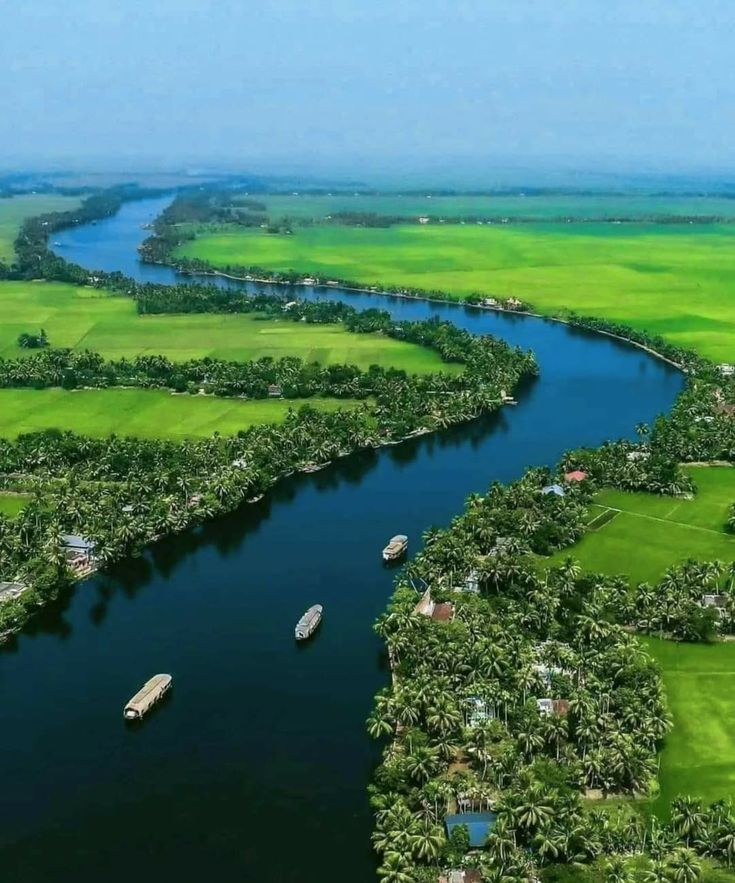
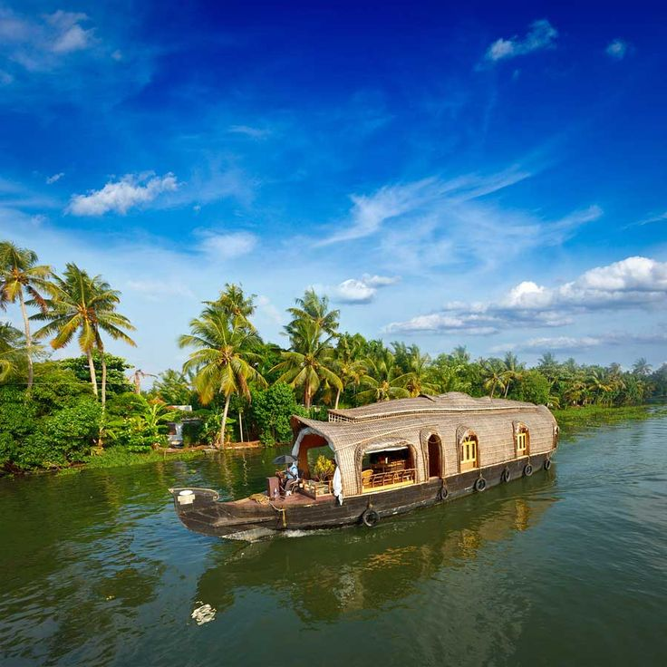
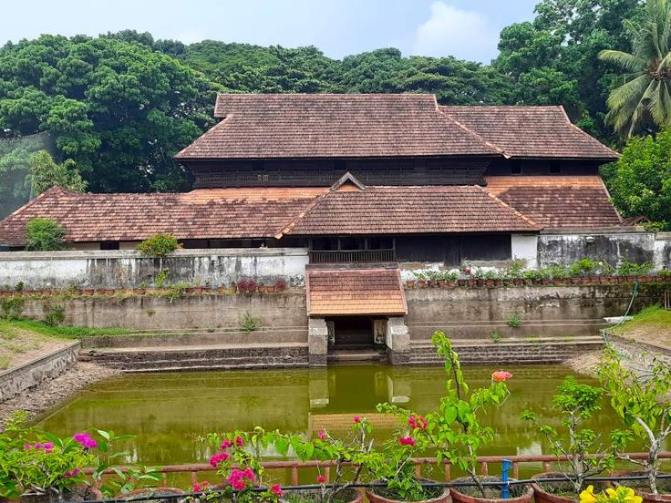
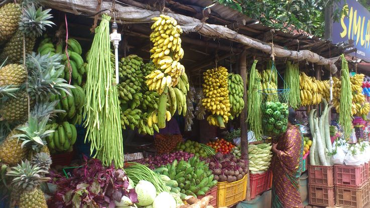
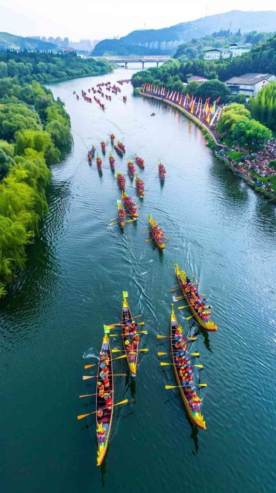
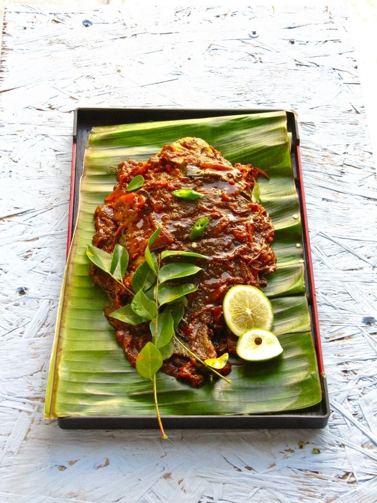

Alleppey Over_all View
Alleppey, also known as Alappuzha, is famous for its backwaters, houseboats, and lush greenery. It is often called the “Venice of the East.”
Peaceful Nature Spot (Backwaters)
The Alleppey backwaters are a network of canals and lagoons, offering serene boat rides and houseboat stays amidst nature.


Historical Place (Krishnapuram Palace)
Krishnapuram Palace is a historic site near Alleppey, known for its mural paintings and traditional Kerala architecture.
Local Market (Alleppey Market)
Alleppey Market is lively with shops selling coir products, spices, and handicrafts, reflecting the local culture.


Famous Festival (Nehru Trophy Boat Race)
The Nehru Trophy Boat Race is a famous event held annually in Alleppey, featuring traditional snake boats and festive celebrations.
Famous Local Food Items (Meals → Karimeen Pollichathu)
Karimeen Pollichathu is a traditional Kerala fish dish, marinated with spices and cooked in banana leaves, popular in Alleppey.
